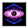

反魔法の眼光 Antimagic Gaze
英語版 CrawlWiki の記事「Antimagic Gaze」(0.34 向け、2026-05-26 版)の翻訳です。原文の著者は編集履歴をご覧ください。
|  反魔法の眼光 | |
|---|---|
| 詠唱の騒音 | 5 |
| 呪文の騒音 | 0 |
| 射程 | 視界(LOS) |
| フラグ | モンスター専用(Monster)、対象指定(Target) |

| 反魔法の武器で打たれたかのように対象の魔力を空中へと漏れ出させ、奪った魔力の分だけ術者の体力を回復する。直接の射線を必要としない。 |
反魔法の眼光はモンスター専用の呪文だ。プレイヤーに対しては抵抗できずに3d(3 * HD / 2)/3 - 1のMPを奪い[1]、モンスターには魔力阻害の状態をかける。プレイヤーのジンニーはMPを持たないので、この呪文はまったく効かない。幽体蛾は反魔法の眼光を唱えてもターンを消費しない。
反魔法の眼光を唱える敵は次のとおり。
- y
 幽体蛾(MPダメージ0-19)
幽体蛾(MPダメージ0-19) - g File:Goji.png ゴジ(MPダメージ0-13)
- @
 ノリス(MPダメージ0-30)
ノリス(MPダメージ0-30) - I
 橙水晶の像(MPダメージ0-15)
橙水晶の像(MPダメージ0-15)

変更履歴
- 反魔法の眼光は0.34で追加された。中身は以前の掠奪の眼光をそのまま写したものだ。
- ↑ player.cc:8497 (0.34.1)
反魔法の眼光の呪文威力は12 * HD。
- ↑ player.cc:8497 (0.34.1)